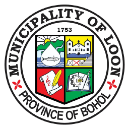

Official Desktop Client
MUNICIPALITY OF LOON
GeoReport • loon.gov.ph
Connect to your running GeoReport Docker server (MySQL + Laravel). All reports, GIS pins, and photos sync directly with your live container database.
Tip: Start your Docker stack in WSL first
with
docker compose up -d. If running this
.exe on another laptop over Wi-Fi, enter the
host laptop's LAN IP (for example
http://192.168.1.10:8000).